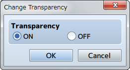
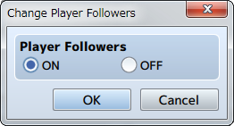
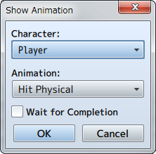
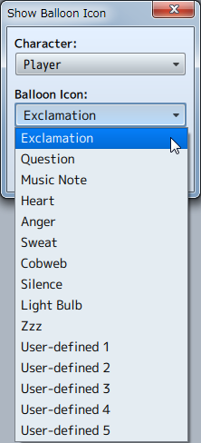
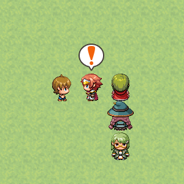

Character
Change Transparency

Function
Controls the display (transparency) of the party moving on the map.
Settings
- Transparency
- Set to [ON] to make the party invisible, set it to [OFF] to make the party visible.
Change Player Followers

Function
Controls whether or not the party members from the 2nd member and on are displayed while walking.
Settings
- Player Followers
- Set to [ON] to make the party visible, set it to [OFF] to hide the party.
Remarks
- Only 4 actors starting from the first will be displayed even when there are 5 members in a party.
Gather Followers
Function
Moves all party members to the same location as the lead actor. There are no parameters to set.
Show Animation

Function
Shows animations on the map.
Settings
- Character
- The display location will be based on the position of the player and events.
- Animations
- Specify the animation to display.
- Wait for Completion
- When enabled, the event will be paused until the animation being displayed has finished.
Remarks
- This cannot be used in battle events.
- Use the [Show Battle Animation] event command when wanting to play an animation during battle.
Show Balloon Icon

Function
Display icons that express emotions using balloons that appear over the party and events. 10 types of icons such as "!" for being surprised and a light bulb when a character has a good idea are available. It is also possible for users to define their own balloon icons.

Settings
- Character
- The display location will be based on the position of the player and events.
- Balloon Icon
- Specify the balloon icon to display.
- Wait for Completion
- When enabled, the event will be paused until the balloon icon being displayed has disappeared.
Erase Event
Function
Temporarily removes the event currently being run. There are no parameters to set. The event will remain erased until the party moves to another map.
Remarks
- This cannot be used in battle events.